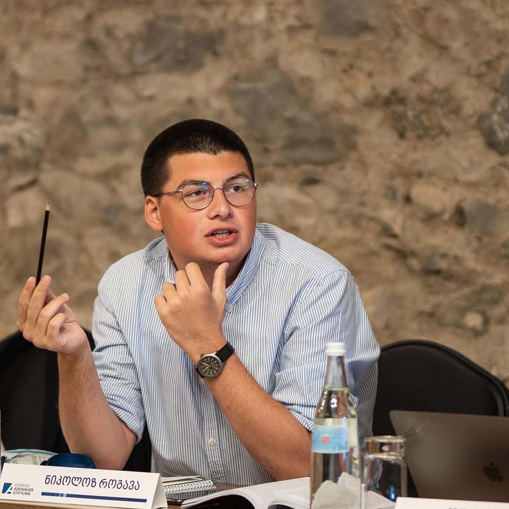

ქართული თარგმანი შესრულებულია ხელოვნური ინტელექტის დახმარებით და შესაძლოა მცირე უზუსტობებს შეიცავდეს. ციტატები ინგლისურიდანაა თარგმნილი. რუკებზე ქვეყნებისა და ქალაქების სახელები ინგლისურადაა.
ბრიუსელსა და მოსკოვს შორის
ავტორიტარული სწავლა, როგორც ძალაუფლების კონსოლიდაციის ინსტრუმენტი საქართველოში
ანოტაცია
როგორ ისესხა საქართველოს მმართველმა პარტიამ სხვა ავტორიტარული რეჟიმების გადარჩენის ტაქტიკა და რა დაუჯდა ეს ქვეყანას.
- ავტორი
- ნიკოლოზ როგავა
- ხელმძღვანელი
- შპენდ კურსანი
- კორპუსი
- 386 განცხადება, 2022–2025
- ინტერვიუები
- 9 ექსპერტი
შესავალი
თავსატეხი
მოკლედ2022 წლის შემდეგ საქართველოს მმართველი პარტია ევროპას კვლავ ჰპირდებოდა, თუმცა პარალელურად იმ რეჟიმების მეთოდებს სესხულობდა, რომლებიც ევროპას უარყოფენ.
ორი ათწლეულის განმავლობაში საქართველო დასავლეთისკენ იყურებოდა. 2003 წლის ვარდების რევოლუციის შემდეგ „ერთიანი ნაციონალური მოძრაობის“ (ენმ) მთავრობამ სუსტი სახელმწიფო თავიდან ააშენა, კორუფციას ებრძოლა და ევროკავშირსა და ნატოში გაწევრიანება მთავარ მიზნად დაისახა.
2012 წელს არჩევნებში ბიძინა ივანიშვილის ხელმძღვანელობით ახალმა პარტიამ, „ქართულმა ოცნებამ“, გაიმარჯვა. ეს იყო ქვეყნის ისტორიაში ხელისუფლების პირველი მშვიდობიანი გადაცემა და თავდაპირველად დემოკრატიისთვის წინგადადგმულ ნაბიჯად აღიქმებოდა. მომდევნო ათი წლის განმავლობაში კი ყველაფერი სხვაგვარად წარიმართა. ხელისუფლების შემაკავებელი მექანიზმები შესუსტდა, ანგარიშვალდებულება შევიწროვდა, ოპონენტებს კი არალეგიტიმურად მოიხსენიებდნენ. მკვლევრები ამ პერიოდს დემოკრატიის თანდათანობით ეროზიად აღწერენ.
შემდეგ, 2022 წლის თებერვალში, რუსეთმა უკრაინაში სრულმასშტაბიანი შეჭრა დაიწყო და ეროზია დაჩქარდა.
თავსატეხი ასეთია. „ქართული ოცნება“ კვლავ პროევროპულ პარტიად აცხადებდა თავს. მან ევროკავშირის კანდიდატის სტატუსისთვის განაცხადი შეიტანა და მიიღო კიდეც. ამავდროულად, პარტიამ აითვისა ანტიდასავლური რიტორიკა და ინსტრუმენტები, რომლებიც სულ უფრო მეტად ჰგავდა რუსეთში, ბელარუსსა და უნგრეთში გამოყენებულს. ყველაზე მკაფიო მაგალითია „უცხოური აგენტების კანონი“, რომელიც არასამთავრობო ორგანიზაციებს უცხოური გავლენის ინსტრუმენტებად განიხილავს.
საკვლევი კითხვაროგორ დაეხმარა ავტორიტარული სწავლა „ქართულ ოცნებას“ ძალაუფლების კონსოლიდაციაში 2022 წლის შემდეგ?
„ავტორიტარული სწავლა“ ნიშნავს, რომ მმართველები სწავლობენ, რა გაამართლა და რა ჩავარდა სხვა მმართველებთან, და ამის მიხედვით იცვლიან ქცევას. შემდეგი თავი ამ იდეას განმარტავს.
თეორია
რა არის ავტორიტარული სწავლა?
მოკლედრეჟიმები აკვირდებიან, რა გაამართლა და რა ჩავარდა, როგორც საკუთარ ქვეყანაში, ისე სხვაგან, და ძალაუფლების შესანარჩუნებლად ტაქტიკას ცვლიან.
ძველი კვლევები ავტორიტარულ რეჟიმებს სტატიკურად განიხილავდა. ისინი იმიტომ ძლებდნენ, რომ ძალა და სტრუქტურა მათ მხარეს იყო, ხოლო როცა იცვლებოდნენ, ეს დაცემის ნიშნად აღიქმებოდა. ახალი ნაშრომები, უპირველეს ყოვლისა სტივენ ჰოლისა, სხვა რამეს ხედავს: მმართველებს, რომლებიც არასოდეს არიან დარწმუნებული საკუთარ გადარჩენაში და ამიტომ ყურადღებით აკვირდებიან ყველაფერს.
ავტორიტარული სწავლა სწორედ ამ დაკვირვების სახელია. მმართველები და მათ გარშემო მყოფი ელიტები გაკვეთილებს იღებენ გამოცდილებიდან, საკუთარიდან თუ სხვისიდან, და მმართველობის წესს ცვლიან. მიზანი ყოველთვის ერთია: ძალაუფლების შენარჩუნება.
ორი გაფრთხილებაა მნიშვნელოვანი. პირველი: სწავლა ადაპტაციაა და არა კოპირება. საზღვარგარეთიდან აღებული ინსტრუმენტი ადგილობრივ პირობებს ერგება. მეორე: როგორც ჰოლი და ამბროსიო წერენ, „ყველა ცვლილება სწავლა არ არის“. ორ რეჟიმს ერთსა და იმავე ტაქტიკამდე ერთმანეთისგან დამოუკიდებლად შეუძლია მისვლა.
რატომ აკვირდებიან რეჟიმები ასე ნერვიულად
ჰოლი ბანკიდან ფულის მასობრივი გატანის მაგალითს იყენებს. ბანკი შეიძლება გაკოტრდეს მაშინაც კი, როცა ფული აქვს, მხოლოდ იმიტომ, რომ ადამიანებს სჯერათ, რომ ყველა დანარჩენი ფულის გატანას აპირებს. რეჟიმიც ასე მუშაობს. ის სტაბილურია მანამ, სანამ ადამიანებს სჯერათ, რომ ძლიერია და დასჯა შეუძლია.
ტიმურ კურანმა ამის ფარულ ნაწილს „პრეფერენციების ფალსიფიკაცია“ უწოდა: ადამიანები საჯაროდ მხარს უჭერენ სისტემას, რომელსაც პირადად ეწინააღმდეგებიან, რადგან შედეგების ეშინიათ. ეს რეჟიმს უფრო მყარად წარმოაჩენს, ვიდრე სინამდვილეშია. დაუმორჩილებლობის ერთმა ხილულმა აქტმა შეიძლება შემდეგი ადამიანისთვის ზღვარი დაწიოს, შემდეგ კი მომდევნოსთვისაც. ეს ჯაჭვური ეფექტია. ავტორიტარული სწავლა, არსებითად, ნაპერწკლების დროულად შემჩნევა და ჩაქრობაა.
დიაგრამა Aრეჟიმების სწავლის სამი გზა
-
პოლიტიკის ტრანსფერი
რეჟიმი შეგნებულად იღებს კონკრეტულ კანონს ან პრაქტიკას სხვა რეჟიმისგან. არჩევანი განზრახულია და, როგორც წესი, შერჩევითი: მხოლოდ ის ნაწილები, რომლებიც, როგორც ჩანს, მუშაობს.
-
დიფუზია
რეჟიმი ხედავს, რამ შეუნარჩუნა სხვებს ძალაუფლება, და ბაძავს. კოორდინაცია არ არსებობს, ზოგჯერ კი არც მკაფიო გაგება, რატომ გაამართლა ამან.
-
პრომოცია
დომინანტი რეჟიმი აქტიურად აყალიბებს სხვების ქცევას მხარდაჭერით, ზეწოლით ან მაგალითით. ეს დემოკრატიის მხარდაჭერის სარკისებური ანარეკლია. ჰოლი რუსეთს პოსტსაბჭოთა სივრცის „ავტორიტარულ სიმძიმის ცენტრს“ უწოდებს.
ყველაზე რელევანტური საქართველოსთვის
დიაგრამა Bბანკის „პანიკა“
ყველა საჯაროდ უჭერს მხარს რეჟიმს. უმეტესობა ამას გულწრფელად არ ფიქრობს.
- საჯაროდ უჭერს მხარს რეჟიმს
- ღიად ეწინააღმდეგება
- ფარულად ეწინააღმდეგება
ტექსტური ვერსია
ოცდაათი ადამიანი საჯაროდ უჭერს მხარს რეჟიმს. მათგან ოცდაორი პირადად ეწინააღმდეგება, მაგრამ შიშის გამო დუმს. როცა ერთი ადამიანი რეჟიმს ღიად აღუდგება, შემდეგს ეს უადვილდება, მერე კი მომდევნოსაც. რამდენიმე წამში ოცდაორივე ღია ოპოზიციაშია და მხოლოდ რვა ლოიალისტი რჩება. თუ რეჟიმი პირველ ადამიანს ჩამოაშორებს, სანამ ვინმე მის საქციელს დაინახავს, არაფერი ხდება: ყველა მხარდაჭერის იერს ინარჩუნებს.
სად ჩანს სწავლა
თავად სწავლა დახურულ კარს მიღმა ხდება. რისი დანახვაც შესაძლებელია, მისი შედეგებია, სამ სფეროში.
- რიტორიკული
- რა ითქმის: ნარატივები, იარლიყები, გამართლებები.
- ინსტიტუციური
- რა იწერება კანონში.
- ოპერაციული
- როგორ გამოიყენება პოლიცია, თვალთვალი და პროტესტის კონტროლი.
ეს ნაშრომი ძირითადად პირველს იკვლევს. სწორედ ენა ხსნის და ამართლებს დანარჩენ ორს.
მეთოდოლოგია
როგორ ვიკვლიე
მოკლედგავაანალიზე ორი პრემიერ-მინისტრის 386 საჯარო განცხადება, შევადარე ისინი სამ საორიენტაციო რეჟიმს და ჩემი ინტერპრეტაცია ცხრა ექსპერტთან გადავამოწმე.
კვლევის დიზაინი თვისებრივი და ინტერპრეტაციულია. ეს არის საქართველოს ერთი შემთხვევის შესწავლა 2022 წლის თებერვლიდან 2025 წლის ბოლომდე. სამი მეთოდი ერთმანეთს ამოწმებს. მკვლევრები ამას ტრიანგულაციას უწოდებენ.
დიაგრამა Cსამი მეთოდი, ერთი სინთეზი
სინთეზი: რას აჩვენებს სამი მეთოდი ერთად
-
დისკურსის კრიტიკული ანალიზი
ორი პრემიერ-მინისტრის, ირაკლი ღარიბაშვილისა და ირაკლი კობახიძის, 386 პირდაპირი ციტატა, რომლებიც რადიო თავისუფლებამ გამოაქვეყნა. გამოვიყენე ვოდაკისა და მაიერის დისკურსულ-ისტორიული მიდგომა. რადიო თავისუფლება დამოუკიდებელია ყველა ქართული პარტიისგან და პირდაპირ ციტატებს აქვეყნებს, რაც მედიის მიკერძოების რისკს ამცირებს. ჩამოტვირთეთ 386-ვე განცხადების სია (CSV: მომხსენებელი, თარიღი, წყაროს ბმული).
-
მეორადი ლიტერატურის მიმოხილვა
რეცენზირებული კვლევები რუსეთის, ბელარუსისა და უნგრეთის შესახებ. ეს სამი ქვეყანა ნიმუშების ამოცნობის საორიენტაციო წერტილია და არა სრულფასოვანი შედარებითი შემთხვევა.
-
ექსპერტებთან ინტერვიუები
ცხრა ნახევრად სტრუქტურირებული ინტერვიუ 2026 წლის მარტსა და აპრილში, ექვსი ქართულად და სამი ინგლისურად. ისინი დისკურსის ჩემეულ ინტერპრეტაციას ამოწმებენ და აზუსტებენ.
ხუთი ლინზა ერთ წინადადებაზე
დისკურსულ-ისტორიული მიდგომა ყოველ განცხადებას ხუთ კითხვას უსვამს. მაგალითები მეორე საკვანძო მომენტიდანაა, 2023 წლიდან.
დიაგრამა Dდისკურსულ-ისტორიული მიდგომის ხუთი ლინზა
ანალიზი
საორიენტაციო რეჟიმები
მოკლედრუსეთი, ბელარუსი და უნგრეთი თითოეული გამოცდილ ინსტრუმენტებს გვთავაზობს. „ქართული ოცნების“ გადაწყვეტილებები სამივე მათგანის ცალკეული ელემენტების ლოგიკას მიჰყვება.
სწავლის ამოსაცნობად ჯერ უნდა იცოდე, რისი სწავლა შეიძლება. მიმოვიხილე კვლევები სამი რეჟიმის შესახებ, რომელთა მეთოდებიც კარგად არის დოკუმენტირებული. რუსეთი, ბელარუსი და უნგრეთი ამ ნაშრომში საორიენტაციო წერტილებია და არა სრული შედარებითი შემთხვევები. რუკაზე ასახული ხაზები საერთო რეპერტუარს აღნიშნავს, რომელსაც ნაშრომი ავლენს. ისინი მითითებების მტკიცებულება არ არის.
ერთმანეთის გვერდით დაწყობისას ნარატივები მეორდება. აირჩიეთ ქვეყანა ან გადაახვიეთ რუკაზე.
- ევროკავშირის წევრი ქვეყნები
- საორიენტაციო რეჟიმები
- საქართველო
- დოკუმენტირებული თანამშრომლობა
- საერთო რეპერტუარი, დასკვნითი
ნარატივების მატრიცარომელი ნარატივი სად ჩნდება
აირჩიეთ წერტილი, რომ ამ ქვეყნის შენიშვნა წაიკითხოთ.
- დოკუმენტირებულია ნაშრომში
- მხოლოდ საფუძვლები
- ნაშრომში არ არის დოკუმენტირებული
ტექსტური ვერსია
ანალიზი
ოთხი საკვანძო მომენტი
მოკლედოთხი საკვანძო მომენტის განმავლობაში მმართველი პარტიის ენა „მშვიდობიდან“ „უცხოურ აგენტებზე“, შემდეგ „სუვერენიტეტზე“ და ბოლოს ევროკავშირთან ღია დაპირისპირებაზე გადავიდა.
ეს ნაშრომის ბირთვია. ორი პრემიერ-მინისტრის საჯარო განცხადებებს ოთხ მომენტში მივადევნე თვალი. განცხადებებს სწავლის მტკიცებულებად არ განვიხილავ. მათ ვიყენებ იმის დასანახად, როგორ შეიცვალა ენის ლოგიკა.
თითოეულ გაჩერებაზე ორ რამეს დააკვირდით: სად დგას ისარი და რამდენად გამკაცრდა ენა.
სიღრმისეულად
„უცხოური აგენტების კანონი“ — „ლაკმუსის ტესტი“
თუ სწავლა სადმე კვალს ტოვებს, ეს კანონშია. დოკუმენტების შედარება საუბრების შედარებაზე მარტივია. ჩემ მიერ გამოკითხულმა რამდენიმე ექსპერტმა „უცხოური აგენტების კანონს“ ლაკმუსის ტესტი უწოდა.
მმართველი პარტია ამბობდა, რომ კანონი ამერიკული უცხოური აგენტების რეგისტრაციის აქტის (FARA) ასლი იყო. რუსეთიც საკუთარ კანონს ზუსტად იგივე შედარებით იცავდა. ნაშრომი სამივეს გვერდიგვერდ ადარებს (ცხრილი ქვემოთაა).
კანონს ეფექტის მისაღწევად არავის აკრძალვა ან დაპატიმრება არ სჭირდება. მისი პირველი ფუნქცია სიმბოლურია.
შედარებაFARA, რუსეთის კანონი და საქართველოს კანონი
ანალიზი
ექსპერტების ხმები
მოკლედცხრა ექსპერტი შეთანხმდა, რომ მსგავსებები შემთხვევითი არ არის, თუმცა გააფრთხილეს, რომ ისინი მტკიცებულებად არ უნდა მივიჩნიოთ.
2026 წლის 24 მარტიდან 17 აპრილამდე ცხრა ადამიანს ჩამოვართვი ინტერვიუ: ავტორიტარიზმის მკვლევრებს, უცხოური აგენტების კანონების სპეციალისტებს, ყოფილ დიპლომატსა და ორ ოპოზიციონერ პოლიტიკოსს. ყველა დათანხმდა, რომ სახელით მოეხსენიებინათ.
ინტერვიუები თავისთავად მტკიცებულება არ არის. მათ დისკურსის ჩემეული ინტერპრეტაციის შესამოწმებლად და დასაზუსტებლად ვიყენებ. ცხრიდან ორი მმართველი პარტიის პოლიტიკური ოპონენტია. მათ მოსაზრებებს მოსაზრებებად წარმოვადგენ.
ავტორიტარული სწავლა „გადარჩენის ტაქტიკების პალიტრაა“.
სუვერენიტეტი დემოკრატიული ერიდან მმართველზე გადავიდა.
რაზე შეთანხმდნენ
- 2022 წელმა დააჩქარა პროცესი, რომელიც უფრო ადრე დაიწყო. რამდენიმე მათგანი მის დასაწყისს 2012 წლით ათარიღებს.
- მსგავსებები რუსეთთან, ბელარუსთან და უნგრეთთან შემთხვევითი არ არის.
- „უცხოური აგენტების კანონი“ სწავლის ყველაზე მკაფიო კვალია.
რაში განსხვავდებოდნენ
მათ განსხვავებული აზრი ჰქონდათ იმაზე, თუ რატომ გაგრძელდა პროევროპული ხაზი ასე დიდხანს. ბადრიძისთვის ეს იყო იმიტაცია, რომელიც ჩამოიშალა, როგორც კი ევროკავშირმა რეალური რეფორმები მოითხოვა. ბოკერიასთვის ეს იყო გზა, ევროპის სარგებელი მიეღოთ ტრანსფორმაციის გარეშე. ნოდიასთვის ომმა რეჟიმის ხარჯებისა და სარგებლის გათვლა შეცვალა. ინაურისთვის კი თვალთმაქცობა უბრალოდ აღარ იყო საჭირო.
სინთეზი და დასკვნა
რა აღმოვაჩინე
მოკლედავტორიტარულმა სწავლამ კონსოლიდაცია გააიაფა და მისი გამართლება გააადვილა. ფასი კი სუვერენიტეტით გადაიხადა ქვეყანამ.
-
უფრო იაფი ექსპერიმენტები
„ქართულ ოცნებას“ ინსტრუმენტები ნულიდან არ შეუქმნია. მან სხვაგან უკვე გამოცდილი ინსტრუმენტები მოარგო. ამან წარუმატებლობის რისკი შეამცირა და კონსოლიდაცია დააჩქარა.
„უცხოური აგენტების კანონი“ ყველაზე მკაფიო მაგალითია: სამართლებრივი და რიტორიკული მოდელი, რომელიც უკვე გამოიყენებოდა რუსეთში, იმავე არგუმენტებით დაიცვეს და შემდეგ მსგავსი აქტორების წინააღმდეგ გამოიყენეს.
სხვაგან გამოცდილი ადგილზე მორგებული რუსეთის უცხოური აგენტების ჩარჩო, 2012 ორი „უცხოური აგენტების“ კანონპროექტი, 2023 და 2024 დაცვის არგუმენტი: „გამჭვირვალობა“ და FARA-სთან შედარება იგივე ორი არგუმენტი სამიზნეები: არასამთავრობოები, შემდეგ მედია არასამთავრობოები, მედია და ზედამხედველი ორგანიზაციები -
ლეგიტიმაციის ენის სახელმძღვანელო
მხოლოდ ძალა საკმარისი არ იყო. მმართველ პარტიას სჭირდებოდა სიტყვები, რომლებიც მის გადაწყვეტილებებს გონივრულად წარმოაჩენდა. ავტორიტარულმა სწავლამ ესეც მისცა: არა მხოლოდ რა უნდა გაეკეთებინა, არამედ როგორ უნდა გაემართლებინა.
დიაგრამა Eსახელმძღვანელო
-
ავტორიტარული პრომოცია და მისი ფასი
შიდა კონსოლიდაცია და გეოპოლიტიკა ერთი ამბავია. დასავლეთის წინააღმდეგ შემობრუნებამ ერთდროულად ორი რამ გააკეთა: ქვეყნის შიგნით ოპოზიციის, სამოქალაქო საზოგადოებისა და პროტესტის დელეგიტიმაცია მოახდინა, გარეთ კი დასავლურ ინსტიტუტებთან ქვეყნის კავშირები დაასუსტა.
მმართველმა პარტიამ ეს სუვერენიტეტის დაცვად წარმოაჩინა. პრაქტიკაში კი ამან შეავიწროვა საქართველოს რეალური სუვერენული არჩევანი, ევროპული ინტეგრაცია, და გააფართოვა იმ ქვეყნის გავლენა, რომელსაც საქართველოს ტერიტორიის დაახლოებით 20% აქვს ოკუპირებული.
რა მოიგო რეჟიმმა
- ოპოზიცია, არასამთავრობოები და პროტესტი ლეგიტიმაციას კარგავს
- რეპრესიის გამართლება მარტივდება
- ძალაუფლებაში გადარჩენა
რა გადაიხადა ქვეყანამ
- ევროინტეგრაცია 2028 წლამდე შეჩერებულია
- დასავლურ ინსტიტუტებთან კავშირები სუსტდება
- მეტი სივრცე რუსეთის გავლენისთვის
რუკასაქართველო და მისი ოკუპირებული ტერიტორიები
- რუსეთის მიერ ოკუპირებული, საქართველოს ტერიტორიის დაახლოებით 20%
- თბილისი
რას ნიშნავს ეს
2022 წლის შემდეგ საქართველოს შემობრუნება მხოლოდ დემოკრატიული უკუსვლის კიდევ ერთი ეტაპი არ ყოფილა ქვეყნის შიგნით. მას გარედანაც აყალიბებდა რეპერტუარი, რომელსაც რუსეთი ავრცელებს და რომელიც სხვა მთავრობებს უკვე ჰქონდათ გამოცდილი. ავტორიტარულმა სწავლამ მმართველ პარტიას ორი რამ მისცა: ენა, რომელიც მის გადაწყვეტილებებს ლეგიტიმურად წარმოაჩენდა, და ინსტრუმენტები, რომელთა გამოცდაც იაფი იყო, რადგან სხვებმა ისინი უკვე გამოცადეს.
ნაშრომი არ ამტკიცებს, რომ მოსკოვიდან პირდაპირი მითითებები მოდიოდა. ის აჩვენებს, რომ მთავრობის გადაწყვეტილებების დრო, თანმიმდევრობა და ლოგიკა სხვაგან გამოყენებულ რეპერტუარებს ემთხვევა. ის ასევე მიუთითებს ფასზე, რომელსაც სიტყვა „სუვერენიტეტი“ მალავს: ტაქტიკამ, რომელიც მთავრობას ძალაუფლებაში ინარჩუნებს, შეიძლება ქვეყანას ნაკლები რეალური არჩევანი დაუტოვოს.
სამომავლო კვლევა
ორი შემდეგი ნაბიჯი იკვეთება. პირველი არის შედარებითი კვლევა, რომელიც თითოეული ქვეყნის პირველად წყაროებს დაეფუძნება და არა მეორად ლიტერატურას. მას პირდაპირი კავშირების უფრო მეტი სიზუსტით გამოვლენა შეეძლება. მეორე თეორიულია: ავტორიტარულ პრომოციას საერთაშორისო პოლიტიკის ჩარჩოები სჭირდება, რათა სწავლის მიზნები მის გეოპოლიტიკურ შედეგებს დაუკავშირდეს.
დანართი: 386-ვე გაანალიზებული განცხადება
იტვირთება…
ავტორის შესახებ
ნიკოლოზ როგავა

ვარ თბილისში მოღვაწე პოლიტოლოგი. ვიკვლევ, როგორ სწავლობენ მთავრობები ერთმანეთისგან ძალაუფლების შესანარჩუნებლად. ჩემი ფოკუსია ავტორიტარული სწავლა, ევროკავშირისა და საქართველოს ურთიერთობები, აღმოსავლეთ პარტნიორობა და პოსტსაბჭოთა პოლიტიკა. მაქვს ტარტუს უნივერსიტეტის მაგისტრის ხარისხი და პოლიტიკის კვლევის სფეროში ვმუშაობდი თბილისში, ტალინსა და ვილნიუსში. ამჟამად ვარ ტელეკომპანია „ფორმულის“ პოლიტიკური ანალიტიკოსი, სადაც ანალიზს ვწერ საინფორმაციო გადაცემა „დროებისთვის“.

გამოცდილება და განათლება
2026 – დღემდე
პოლიტიკური ანალიტიკოსი
ტელეკომპანია „ფორმულა“, „დროება“ (თბილისი)
2024 – 2026
მაგისტრატურა: პოლიტიკა და მმართველობა ციფრულ ეპოქაში
ტარტუს უნივერსიტეტი, GPA 4.25
2025 – 2026
Erasmus+ სემესტრი, პოლიტიკური მეცნიერება
ბოლონიის უნივერსიტეტი
2025
კვლევითი ასისტენტი
Visionary Analytics (ვილნიუსი), ინოვაციები, კვლევა და განვითარება
2025
სტაჟიორი
კონრად ადენაუერის ფონდის ბალტიის ოფისი (ტალინი)
2024
სტაჟიორი / მკვლევარი
საქართველოს საპარლამენტო კვლევითი ცენტრი (USAID-ის ეროვნული მმართველობის პროგრამა)
2023
სტაჟიორი
ეკონომიკისა და მდგრადი განვითარების სამინისტრო, ეკონომიკური ანალიზისა და რეფორმების დეპარტამენტი
2021
სტაჟიორი
საჯარო სამსახურის ბიურო, ანალიტიკური დეპარტამენტი
2020 – 2024
ბაკალავრიატი, პოლიტიკური მეცნიერება
თბილისის სახელმწიფო უნივერსიტეტი (სტიპენდია). ნაშრომი საქართველოში დაგროვებითი საპენსიო სისტემისადმი საზოგადოების სკეპტიციზმის შესახებ
2019 – 2022
დამფუძნებელი და აღმასრულებელი დირექტორი
„ლაზიერი“, საგანმანათლებლო ინიციატივა 300-ზე მეტი ახალგაზრდა მონაწილით
უნარები
- თვისებრივი მეთოდები: დისკურსის კრიტიკული ანალიზი, ექსპერტებთან ინტერვიუები, ფოკუს-ჯგუფები
- რაოდენობრივი ანალიზი და გამოკითხვის დიზაინი
- პოლიტიკის დოკუმენტები
- მონაცემთა ვიზუალიზაცია
- პოლიტიკური წერა